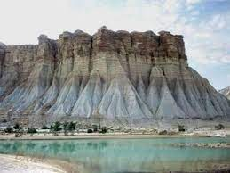
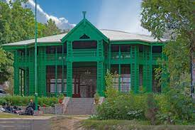
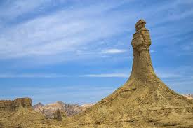
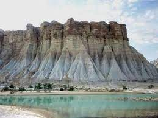
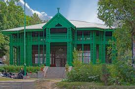
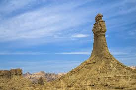

Balochistan is a historical region in Western and South Asia, located in the Iranian plateau's far southeast and bordering the Indian Plate and the Arabian Sea coastline. This arid region of desert and mountains is primarily populated by ethnic Baloch people.The Balochistan region is split among three countries: Iran, Afghanistan and Pakistan. Administratively itcomprises the Pakistani province of Balochistan, the Iranian province of Sistan and Baluchestan, and the southern areas of Afghanistan, which include Nimruz,